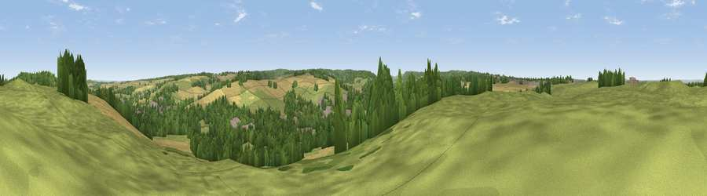

Viewpoint near Eynsford
#33661 in England · top 23% of its area beats it · near Eynsford · access?Where it is
The exact computed spot (TQ 55325 64275). Click the marker for map links.
Public access: no public right of way or access land is recorded at this exact spot — it may be on private land. Computed from Natural England's CRoW access layer and OpenStreetMap rights of way — not the legal definitive map. Always verify locally.
The view, rendered

A 360° render of this exact spot computed from the terrain model, tree cover and land cover — summer colours, afternoon light, calibrated against photographs of famous viewpoints. Real trees, hedges and buildings will differ in detail.
The panorama
Grey silhouette: terrain skyline in each direction (720 bearings, Earth curvature and refraction included). Dashed green: skyline with trees (+15 m) and buildings (+8 m) as obstacles. Blue strip: how far the ground is visible on each bearing.
Where the view opens
Wedge length = distance to the farthest visible ground on that bearing (vegetation-aware). Rings at 10, 25 and 50 km.
What fills the view
42% cropland · 37% grassland · 20% woodland ·
Angular shares of the visible panorama (visual magnitude), not map area. Landscape diversity 0.48 (0–1 Shannon).
Key numbers
More beautiful places nearby
The staircase of upgrades: each row has a higher view potential than everything closer. Driving times are estimates from straight-line distance, calibrated against real road routing — check an actual route before setting out.
| Place | Direction | Drive | Score |
|---|---|---|---|
| Viewpoint near West Kingsdown | NE · 1 km | ~3 min | 38.5 |
| Viewpoint near Farningham | NNE · 2 km | ~5 min | 39.1 |
| Viewpoint near Shoreham | SW · 4 km | ~9 min | 40.2 |
| Viewpoint near Wrotham | SE · 6 km | ~13 min | 43.9 |
| Viewpoint near Wrotham | SE · 7 km | ~14 min | 53.6 |
| Viewpoint near Wrotham | SE · 8 km | ~15 min | 54.4 |
| Viewpoint near Trottiscliffe | ESE · 9 km | ~17 min | 60.3 |
| Viewpoint near Vigo Village | ESE · 9 km | ~18 min | 60.7 |
51.35632, 0.22937 · source: screening · position refined by local search. Computed location — check access rights before visiting.